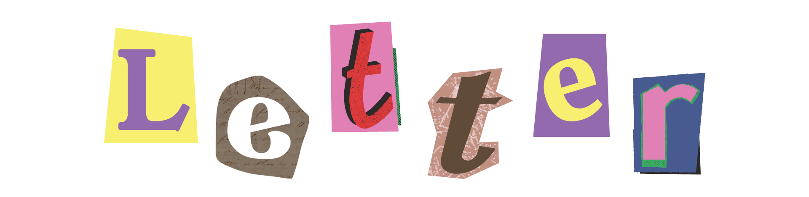

The heat was unbearable for me that day, and my purple hoodie obviously didn't help. As bright as the sun,
I couldn’t help but notice this guy’s yellow Among Us keychain when he passed us by—waving his hand to greet. I came
to know that his name is Maiko. Cute eyes, pleasant voice, good height—“This guy is cute,” I thought to myself. We ended up
in the same circle of friends yet barely spoke to each other. Fast forward, we got to know each other during our Founders’
Preparation, and he turned out to be really interesting. Since then, I knew I liked him, not just as a friend. That’s basically how I’d summarize how this birthday boy and I met.
Today, September 9, a fine young gentleman is born, and we’re here to celebrate his greatness.
happy happy birthday, babyyy!! this is what I've been cooking mwheheheheh. i hope babi like this small n short coded game. you 20 now aaaaa my twinn.
me thank you for everything but especially for being the best bf to ever exist. i hope we can spend our time together til we celebrate our hundredth or two-hundredth
birthdays raaaaaah. i wish you the best health and safety, baby. me wish babi spend his day real good and may his wishes come true. i love you so much hon. me won't
make this long na. i js wanna let you know that i'm always here for you. happy birthday again, sweet boy. i love you.